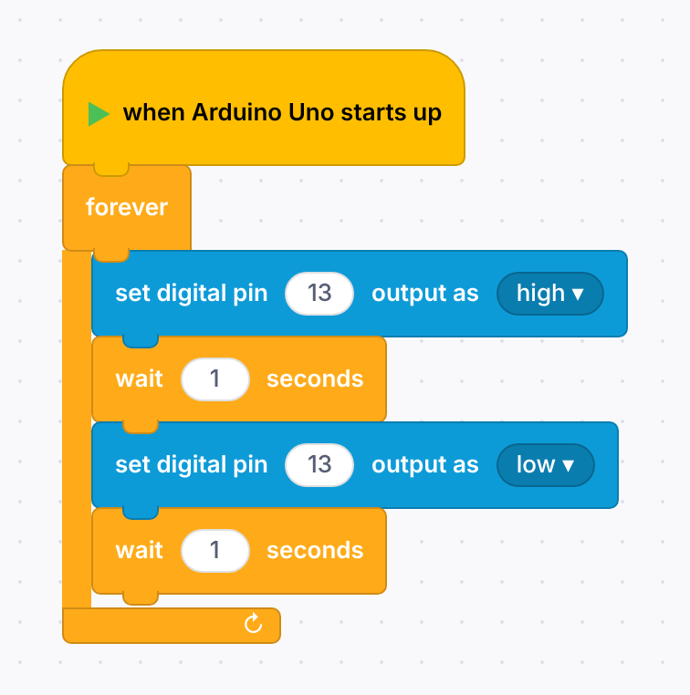

🎬فيديو الشرح
📖الشرح حسب العمر
🧒
عائلة الأردوينو كبيرة: لوحات صغيرة للمشاريع الصغيرة، ولوحات كبيرة للمشاريع الضخمة.
Arduino IDE بيئة مجانية لكتابة الكود ورفعه، وفيها مكتبات (Libraries) جاهزة وأمثلة (Examples). أشهر اللوحات: UNO للتعلّم، Nano صغيرة للمشاريع المدمجة، Mega بـ 54 منفذاً للمشاريع الكبيرة، Leonardo تعمل كفأرة/لوحة مفاتيح، وESP32 فيها Wi-Fi وBluetooth.
Arduino IDE بيئة مجانية لكتابة الكود ورفعه، وفيها مكتبات (Libraries) جاهزة وأمثلة (Examples). أشهر اللوحات: UNO للتعلّم، Nano صغيرة للمشاريع المدمجة، Mega بـ 54 منفذاً للمشاريع الكبيرة، Leonardo تعمل كفأرة/لوحة مفاتيح، وESP32 فيها Wi-Fi وBluetooth.
- UNO: ATmega328P — 14 رقمي / 6 تناظري
- Nano: نفس UNO بحجم 45×18mm
- Mega 2560: 54 رقمي / 16 تناظري / 4 UART
- Leonardo: ATmega32U4 — USB HID
- ESP32: 240MHz ثنائي النواة، Wi-Fi + BT، منطق 3.3V
🖼️الصورة التوضيحية
- 1UNOالأنسب للبداية
- 2Nanoصغيرة للـ breadboard
- 3Megaمنافذ كثيرة
- 4ESP32إنترنت الأشياء
💻البرمجة: Arduino IDE و mBlock 5
void setup() { pinMode(13, OUTPUT); } void loop() { digitalWrite(13, HIGH); // أشعل delay(1000); digitalWrite(13, LOW); // أطفئ delay(1000); }

في mBlock 5: الأجهزة ← أضف ← Arduino Uno، اختر وضع رفع (Upload)، ثم اتصال واختر منفذ COM، ركّب الكتل كما في الصورة واضغط رفع.
✅سؤال سريع
أي لوحة فيها Wi-Fi مدمج؟